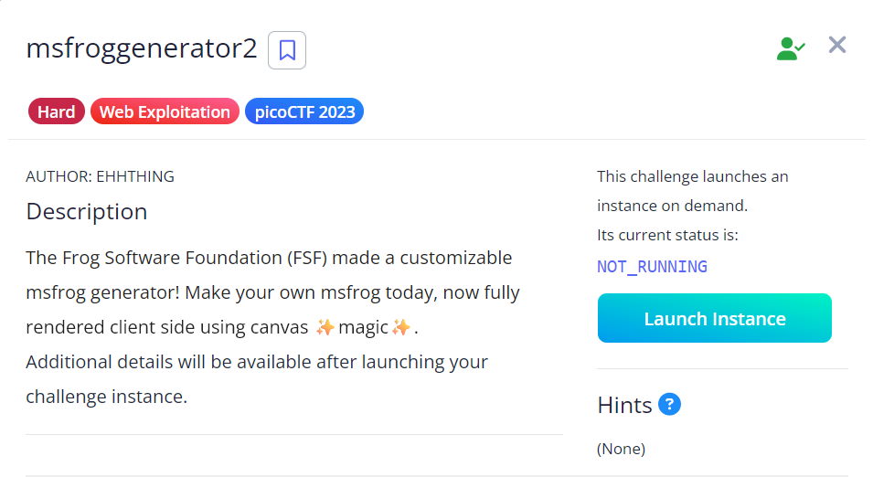
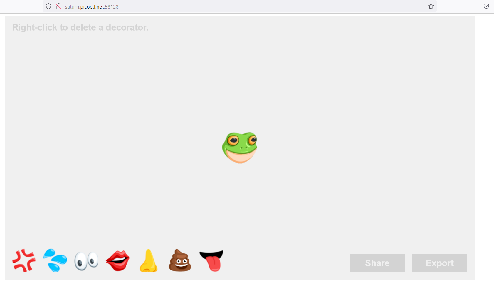
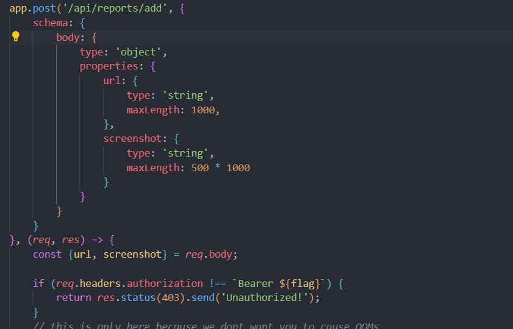
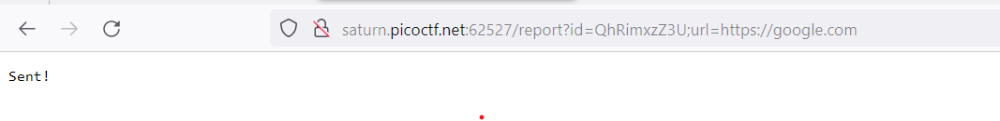
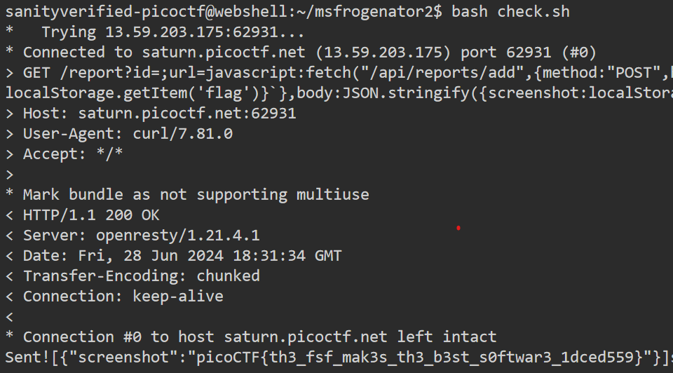

msfroggenerator2

msfroggenerator2 is an Web Exlpoitation challenge. It is an hard category challenge. Here is an first look of the challenge
On lunching the instance we get a website aslo we get source code to download and analyze the code.
Here we have a canvas, emojis, share button and export button. We can pick any
emoji and create images. On clicking export we can download the image. When we click
share button the url changes and an id parameter is added. http://saturn.picoctf.net:58128/?id=1GURybiXjO
So, we can assume that we can exploit this id with XSS playloads. On exploring the source code we find two interesting bot and api. Api handles creation of images and reports. It has GET and POST methods for /api/get, /api/create, /api/reports/get and /api/reports/add paths. reports/get and add are two interesting paths to look at. The reports/add requires authentication and it requires flag to authenticate.
The bot.js code reveals that the flag is stored in localstorage, then headers with authentication and some body content is sent.

So we now know that we can exploit this reports add and get to get our flag. On checking the website i found that we can send /report with the id and it says sent. Also we can send url as:
Also we have reports/add which adds the reports with authentication as a flag. So, we can exploit these with reports/get to display the flag. So, we can prepare an playload that sends the authentication headers as:
To send this playload we write a bash script that uses curl and post the header and body content. Also to get/display the flag. The bash script is as:
Here the port number may vary every time. We load/send this playload on url=javascript: and paste our playload with fetch("/api/reports/add",playload).
Then we get flag as: Sent![{"screenshot":"picoCTF{th3_fsf_mak3s_th3_b3st_s0ftwar3_1dced559}"}]
picoCTF{th3_fsf_mak3s_th3_b3st_s0ftwar3_1dced559} is the required flag.